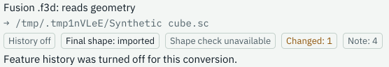

Dutchman Convert / v0.2.10
Your designs.
Their history.
In SolidCraft.
Open your Fusion, Inventor, SolidWorks, Onshape… designs in SolidCraft, with their feature history.
Free and open source. Windows, macOS and Linux.
History support varies by format. Onshape is in preview.
A conversion summary.f3d → SolidCraft

Desktop apps: Windows MSI macOS DMG Linux x64 AppImage Linux ARM64 AppImage
Archives: Windows ZIP Mac universal Mac Apple silicon Mac Intel Linux x64 Linux ARM64 Arch x64 package Checksums & release notes ↗
Install
Try converted designs in SolidCraft’s browser demo.
Self-host the browser converter or a watched folder: Docker setup.
What converts
Your native files → SolidCraft
Keep editable features where they map. Bring across geometry where they don’t. The report tells you what was kept, changed or dropped.
FreeCAD
.FCStdGeometry · history where mappedInventor
.ipt · .iamPart history where mapped · placed assembliesSolidWorks
.sldprt · .sldasmPart geometry · placed assembliesCATIA
.CATPartGeometryRhino
.3dmGeometryCreo View
.pvzGeometryACIS
.sat · .sab · .smt · .smbGeometrySTEP
.step · .stpGeometryCreo
.prt · .prt.NNot converting yetNX
.prtNot converting in 0.2.10Geometry · coming in 0.3.0IGES
.igs · .igesImport in SolidCraftOnshape
Coming in 0.3.0PreviewFusion and Inventor part history can be rebuilt when every feature maps. FreeCAD .FCStd is an input: geometry, components, and history and joints where they map. Inventor and SolidWorks assemblies read placed parts and sub-assemblies from their project files. Current support follows the 0.2.10 format report and release documentation. NX geometry and the Onshape preview are for 0.3.0.
New this week
Open native files inside SolidCraft
The SolidCraft plugin installs from a ZIP. Open native CAD files right inside SolidCraft, without switching to a separate app.
Bring your Onshape designs along
Onshape support is in preview. Try it when 0.3.0 is released, check the conversion report, and tell us what didn’t come across.
Help make it better
A file that fails is a place to start.
DM Dutchy on Discord
Private by default. Send the native file and a STEP export if you have one. Only the Dutchman team sees it.
Join Discord →Check a folder
Find conversion problems in a folder on your own computer. Your files stay with you.
dutchman doctorThe stress corpus
Explore the cases used to find conversion problems and keep track of progress.
10,000 test parts, checked in SolidCraft and FreeCADSmall files. Known answers.
Follow a short recipe in your CAD program. Help check conversions against a design we understand.
See fixture recipes →Projects
Dutchman Convert
Native CAD files to SolidCraft, with feature history where supported and a report of what could not be carried across. Also writes FreeCAD documents.
View on GitHub ↗Fixtures
Small, known CAD files made from short recipes, so conversions can be checked against the original design.
Make a fixture →Pilot
Connects local assistants to SolidCraft. Available through SolidCraft’s Assistant or the dutchman pilot command.
Built from public information and files we may use.Your files stay yours.Every conversion reports its losses.